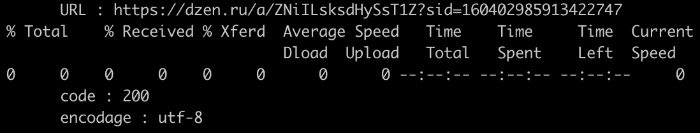

Lors de la constitution de la liste des URL, j'ai utilisé des liens vers des articles dans des magazines en ligne, des blogs et des liens provenant d'agrégateurs de nouvelles: news.google.com, smi2.ru.
Au début du travail, je prévoyais de constituer un corpus dont les éléments représenteraient un seul genre - par exemple, article de presse. Cependant, il est rapidement devenu évident que dans la plupart des articles de presse, le mot cible n'était utilisé qu'une seule fois - dans le titre en tant que complément circonstanciel (par exemple, "с иронией", avec l'ironie), ce qui ne nous permettrait pas d'explorer pleinement les cooccurrences aux étapes ultérieures du travail.
Pour rechercher des articles en russe, j'ai utilisé le moteur de recherche Google, qui, cependant, ne m'a pas permis de constituer un corpus complet, en particulier en ce qui concerne les articles de presse. Plus tard, j'ai également utilisé le moteur de recherche Yandex, créé en Russie. Les problèmes de recherche d'articles en français étaient principalement dus au fait que la plupart des magazines offrent l'accès au contenu sur abonnement payant.
Il convient également de noter que toutes les URL n'ont pas été correctement traitées par l'utilitaire curl (utilisé pour envoyer des requêtes HTTP), probablement en raison du blocage par les serveurs de l'accès aux requêtes automatisées. Après le traitement initial de la liste des URL, j'ai exclu les liens pour lesquels il n'a pas été possible d'obtenir des informations, et j'ai laissé dans les fichiers de listes de liens (et donc dans le tableau HTML) uniquement les URL des sources disponibles.
Exemple :

Pour les raisons mentionnées, j'ai opté pour le contenu des articles et je n'ai pas limité ma sélection aux articles publiés exclusivement ces dernières années, mais j'ai fixé une limite temporelle autour de l'année 2016. Cela a permis d'obtenir un corpus plus diversifié.
Après avoir sélectionné les liens, je les ai recomptés et vérifiés pour les doublons de la manière suivante :
➜ URLs git:(main) ✗ wc -l sarcasme_rus.txt 26 sarcasme_rus.txt ➜ URLs git:(main) ✗ sort sarcasme_rus.txt | uniq -d
Ainsi, le dossier URLs sur github contient les fichiers suivants avec des listes de liens pour chaque mot : ironie_rus.txt, ironie_fr.txt, sarcasme_rus.txt, sarcasme_fr.txt, ainsi que les fichiers all_rus.txt et all_fr.txt avec les listes combinées pour la paire ironie/sarcasme.
Voici les tableaux générés à l'aide du script traitement_url.sh, dans lesquels sont incluses les informations sur les URLs choisies, le code HTML, l'encodage du site et le nombre d'occurrences du mot cible.